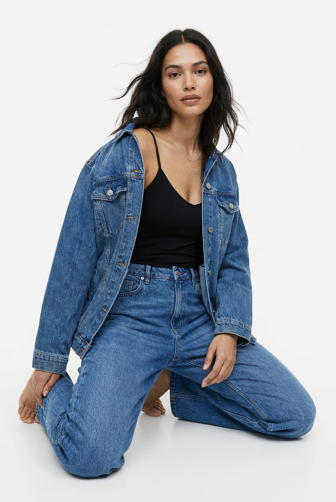
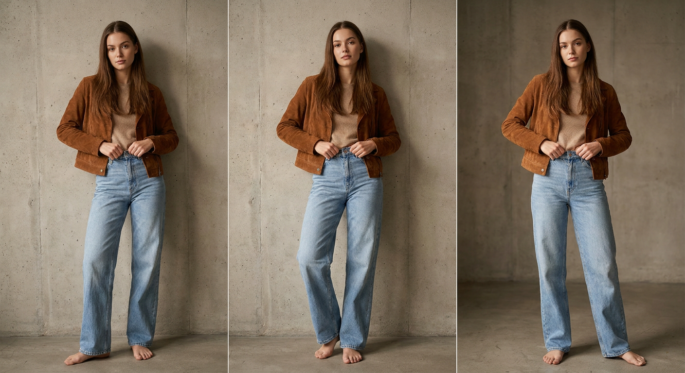
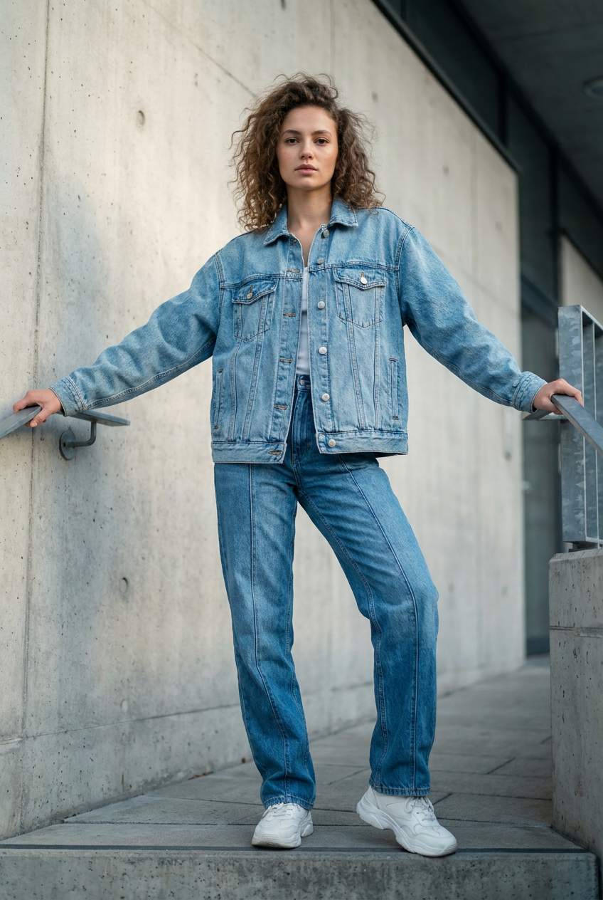
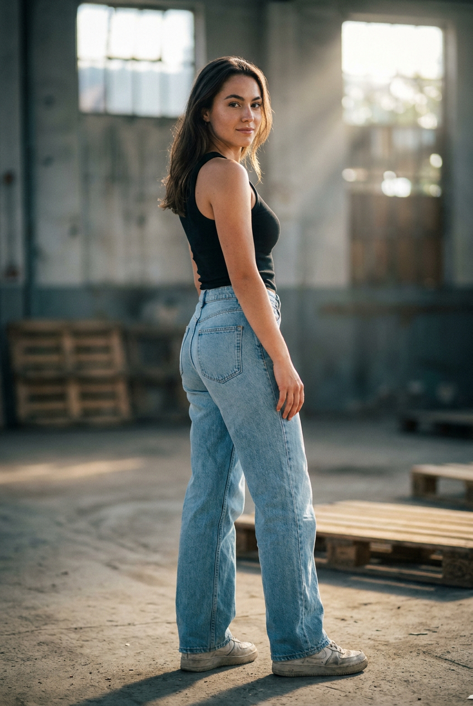
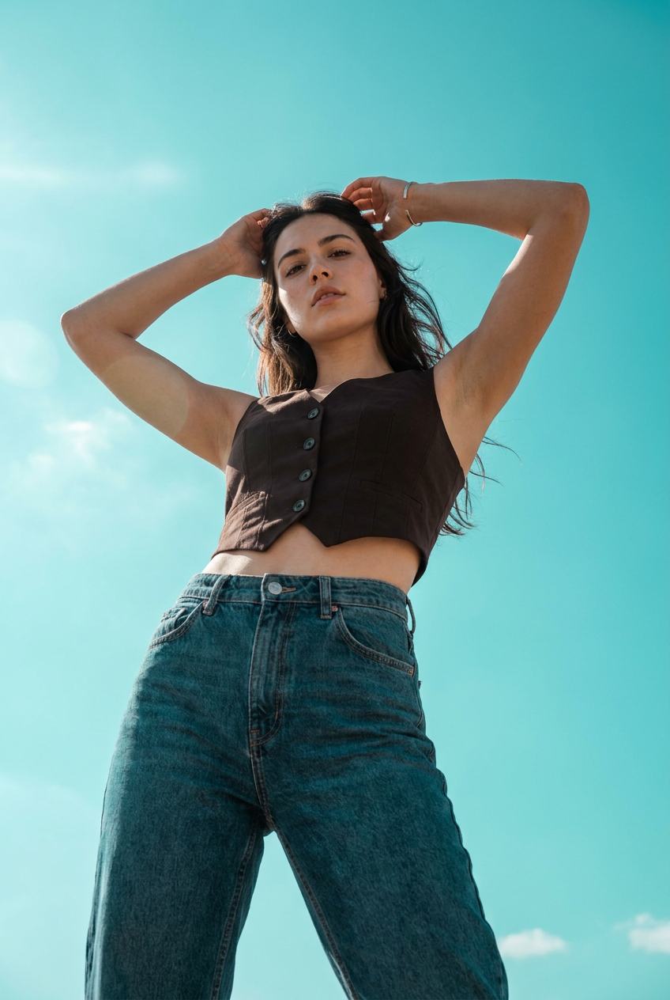
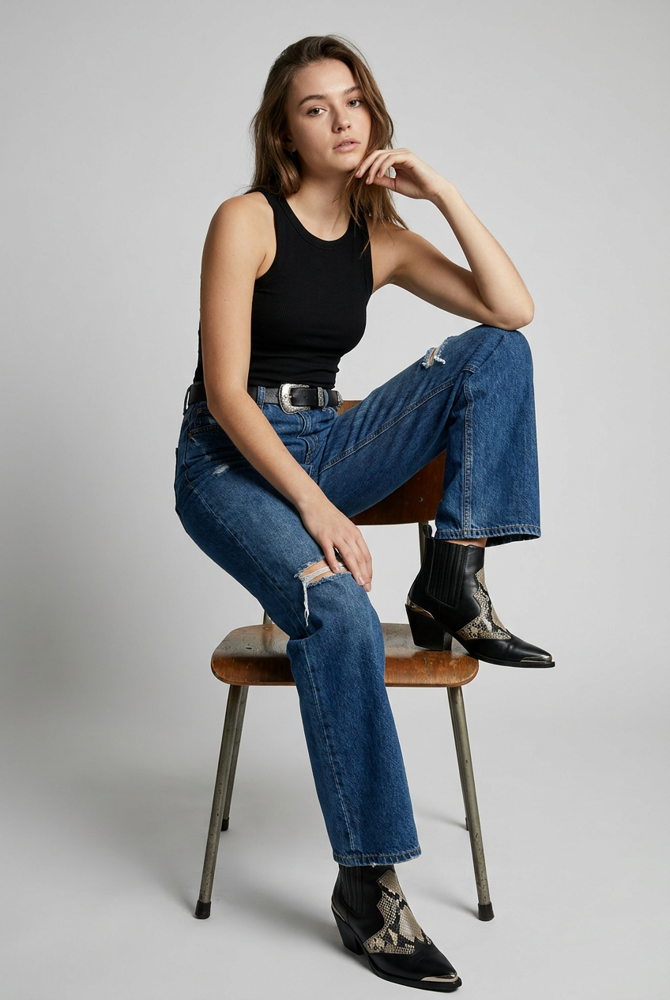
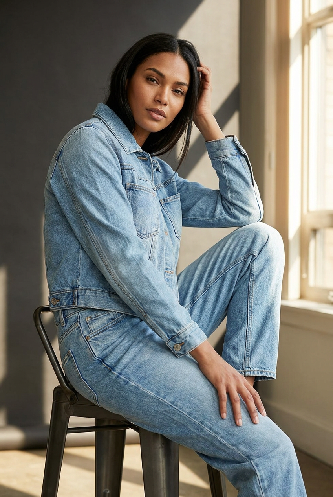
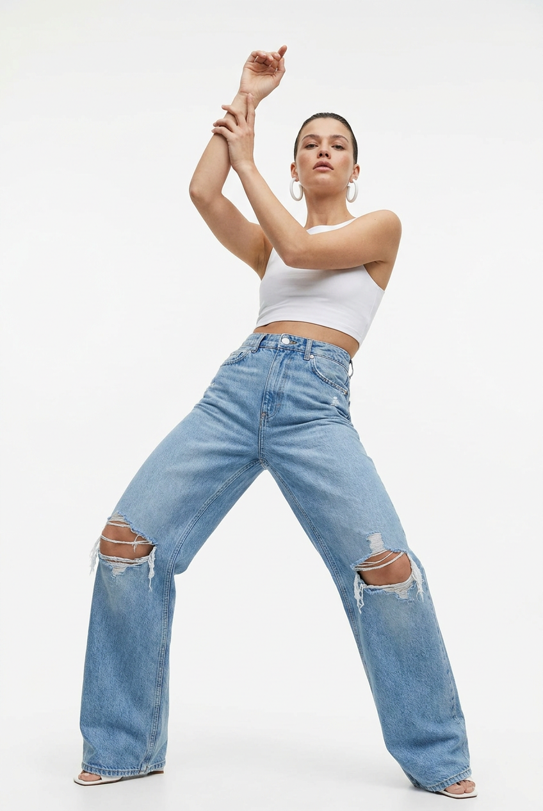
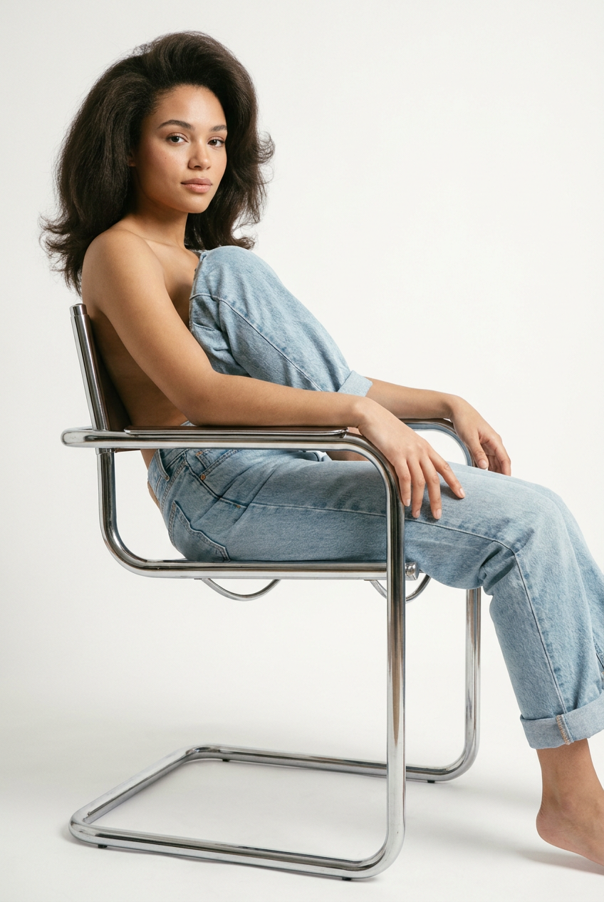
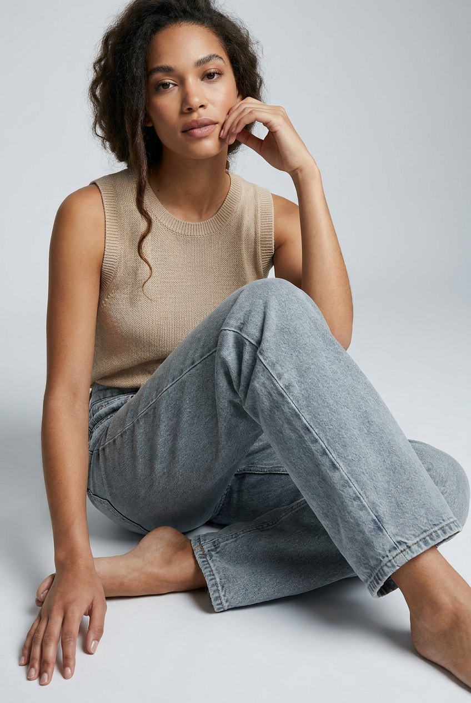

ИИ-фото в джинсах: 10 промптов для нейросети

Джинсы в ИИ-съёмке часто выглядят как бесформенная синяя ткань: пропадают швы, ломается посадка, а пальцы и поза выдают генерацию. Хороший промпт решает это ещё до первого рендера — задаёт крой, ракурс, свет, положение тела и фактуру денима.
В подборке — 10 сценариев для fashion-фото: от белой студии и бетонных лестниц до индустриального интерьера и съёмки у окна. Здесь есть динамичные позы, портреты сидя, кадры в полный рост и варианты с акцентом на джинсы.
Как сгенерировать такое фото: пошагово
Нужен снимок анфас при ровном свете, лицо в кадре целиком, без тёмных очков и головных уборов. Разрешение от 1000 пикселей по короткой стороне. Чем чётче исходник, тем точнее модель повторит черты.
Выберите сценарий ниже и нажмите «Копировать» — текст уйдёт в буфер целиком, вместе с командой сохранения внешности. Эта команда стоит первой строкой и отвечает за то, чтобы на выходе было ваше лицо, а не случайное.
Кнопка «Сгенерировать» рядом с каждым промптом открывает модель в новой вкладке. Nano Banana Pro работает с референсом лица — в отличие от моделей, которые генерируют портрет с нуля и узнаваемость теряют.
Промпт — в поле ввода, портрет — через загрузку референса. Порядок значения не имеет, но без референса команда сохранения внешности работать не будет: модели нечего сохранять.
Для сторис и ленты берите 9:16, для превью и обложек — 4:3. Первый результат редко идеален: если поза или свет ушли не туда, поправьте соответствующую часть промпта и запустите заново. Обычно хватает двух-трёх итераций.
10 промптов для генерации
1. Динамика на белом фоне
Строго сохранить внешность по загруженному референсу: черты лица, пропорции, мимику и текстуру кожи без изменений. Фотореалистичная студийная fashion-съёмка, вертикальный формат, белый бесшовный фон, полный рост или кадр от головы до обуви. Девушка с лицом по загруженному референсу, без изменения индивидуальных черт, пропорций и естественной мимики. Она сидит на полу в динамичной позе: одно колено поднято ближе к камере, вторая нога отведена в сторону, корпус развёрнут под небольшим углом, взгляд прямо в объектив. Выражение спокойное и уверенное. Правое плечо частично скрывает объёмная джинсовая куртка или жакет оверсайз. Одна рука касается денима или пола рядом с коленом, пальцы анатомически корректные. Волосы распущены, отдельные пряди подняты движением воздуха. Реалистичная кожа, натуральный макияж, точная фактура джинсовой ткани, мягкий студийный свет, высокая детализация.
2. Лофт и свободные джинсы

Строго сохранить внешность по загруженному референсу: черты лица, пропорции, мимику и текстуру кожи без изменений. Редакционная fashion-съёмка в минималистичной лофт-локации, вертикальный кадр в полный рост. Молодая взрослая девушка стоит у стены с заброшенной индустриальной фактурой. Одна нога согнута и опирается на другую, вторая выпрямлена и немного выставлена вперёд; корпус слегка наклонён, вес тела на согнутой ноге. Обе руки направлены вниз и держат пояс или край джинсов, будто модель поправляет посадку. Спокойный уверенный взгляд в камеру. Волосы распущены, пробор по центру, естественная текстура. Натуральный макияж, видимые поры и живая кожа без пластикового эффекта. Светло-голубые джинсы с высокой посадкой, свободным прямым или слегка широким кроем, заметными карманами, поясом, швами и мягкими складками. Реалистичный деним, сдержанная цветокоррекция, резкие детали одежды.
3. Деним на бетонной лестнице

Строго сохранить внешность по загруженному референсу: черты лица, пропорции, мимику и текстуру кожи без изменений. Фотореалистичный вертикальный fashion-портрет в полный рост: девушка стоит на бетонных ступенях у стены современного здания. Камера расположена немного ниже уровня глаз, лёгкий low-angle подчёркивает вертикали лестницы и архитектурные линии. Модель смотрит в объектив или чуть выше него, выражение лица спокойное, уверенное. Волосы уложены естественными локонами, несколько прядей слегка растрёпаны. Кожа с реалистичной текстурой, без чрезмерной ретуши. На девушке свободная светло-голубая джинсовая куртка с пуговицами, нагрудными карманами, строчкой, заклёпками и естественными складками на рукавах и спине. Синие джинсы из плотного денима, посадка и крой читаются в полный рост. Современная архитектурная среда, мягкий дневной свет, высокая детализация ткани, аккуратная анатомия, вертикальная перспектива без искажений.
4. Полуоборот в индустриальном интерьере

Строго сохранить внешность по загруженному референсу: черты лица, пропорции, мимику и текстуру кожи без изменений. Вертикальная фотореалистичная fashion-съёмка в индустриальном интерьере, полный рост. Девушка стоит к камере спиной в пол-оборота, видна спина и боковая линия тела, голова повернута через плечо. Взгляд уверенный и спокойный, на губах лёгкая полуулыбка. Вес перенесён на одну ногу, вторая немного согнута, руки свободно опущены вдоль корпуса. Анатомия точная, пальцы без лишних фаланг и деформаций. На модели матовый чёрный облегающий топ на бретелях с натуральными складками и аккуратными швами. Джинсы светлого оттенка, свободного кроя, с реалистичной посадкой, карманами, поясом, строчкой и фактурой денима. Ухоженная кожа, естественный макияж с акцентом на глаза. Мягкий направленный свет, бетонные и металлические поверхности фона, editorial-настроение, чёткие детали без пересветов.
5. Низкий ракурс и поднятые руки

Строго сохранить внешность по загруженному референсу: черты лица, пропорции, мимику и текстуру кожи без изменений. Фотореалистичная уличная fashion-съёмка с выразительным ракурсом снизу вверх, вертикальный формат. Молодая взрослая девушка стоит лицом к камере, корпус слегка развёрнут в сторону, подбородок немного поднят. Обе руки подняты над головой, пальцы сцеплены у волос или удерживают пряди, локти широко разведены. Волосы частично свободно падают вокруг шеи, отдельные пряди заметно разлетаются, текстура естественная. На модели средне-тёмные синие джинсы высокой или средней посадки, свободного слегка мешковатого кроя; хорошо видны карманы, пояс, швы и декоративная строчка. Верх — укороченный корсетный жилет коричнево-чёрного оттенка с кнопками или пуговицами спереди, плотной тканью и выраженными линиями швов. Спокойное уверенное выражение, реалистичная кожа, дневной outdoor-свет, пропорциональная перспектива.
6. Винтажный стул в студии

Строго сохранить внешность по загруженному референсу: черты лица, пропорции, мимику и текстуру кожи без изменений. Детализированная вертикальная студийная fashion-съёмка на ровном светло-сером или белом фоне без лишних предметов. Девушка сидит на винтажном деревянном стуле с деревянными или металлическими ножками, корпус развёрнут к камере в три четверти. Одна нога согнута и лежит на сиденье, вторая опущена вниз, стопа касается пола, обувь видна. Локоть одной руки опирается на колено, кисть поднята к виску или подбородку и касается волос; вторая рука лежит на колене либо слегка удерживает посадку джинсов. Взгляд спокойный, лицо расслабленное. На модели джинсы свободного кроя с высокой посадкой, заметными карманами, поясом, швами и естественными заломами ткани. Верх — лаконичный топ, сочетающийся с денимом. Натуральный макияж, реалистичная кожа, точная анатомия рук, мягкий рассеянный студийный свет, высокая детализация.
7. Солнечный кадр на табурете

Строго сохранить внешность по загруженному референсу: черты лица, пропорции, мимику и текстуру кожи без изменений. Фотореалистичная вертикальная fashion-съёмка в светлом студийном интерьере, солнечные лучи проходят из окна сбоку. Девушка сидит на высоком металлическом стуле или табурете полубоком к камере. Одна нога вытянута вдоль нижнего края кадра, вторая согнута и опирается на стул или пол, корпус слегка отклонён назад. Одна кисть поднята к виску или затылку, будто модель поправляет волосы, вторая лежит на бедре либо около колена. Лицо развёрнуто к объективу, взгляд уверенный и спокойный. Волосы гладкие или частично собранные, отдельные пряди аккуратно обрамляют лицо. Макияж выразительный в зоне глаз, кожа ухоженная, но с натуральной текстурой. Джинсы свободного кроя с высокой посадкой, чёткими карманами, поясом и видимыми швами, верх — простой топ. Тёплые солнечные блики, мягкие тени, реалистичная ткань и правильные пропорции.
8. Танцевальная поза в дениме

Строго сохранить внешность по загруженному референсу: черты лица, пропорции, мимику и текстуру кожи без изменений. Фотореалистичная студийная fashion-съёмка на белом seamless-фоне, вертикальный кадр. Девушка стоит на белом полу или невысоком подиуме в широкой танцевальной позе: ноги разведены в форме буквы V, почти по линии шпагата, колени слегка согнуты, таз опущен. Корпус чуть отклонён назад, подбородок поднят. Обе руки вытянуты над головой, одна кисть поддерживает другую за запястье, пальцы выглядят естественно. Голова слегка повернута, взгляд расслабленный и уверенный, направлен в объектив или немного в сторону. На модели укороченный белый топ без рукавов или на тонких бретелях и свободные синие джинсы с высокой посадкой. У денима видны пояс, карманы, строчки, складки и натуральная плотная фактура. Естественный макияж, чёткие брови, реалистичная кожа. Ровный мягкий свет, точная анатомия, чистая композиция без лишних объектов.
9. Светлый деним на белом фоне

Строго сохранить внешность по загруженному референсу: черты лица, пропорции, мимику и текстуру кожи без изменений. Студийная fashion-съёмка в вертикальном формате, мягкий свет без жёстких теней, белый бесшовный фон. В кадре молодая женщина от головы до обуви, объёмная укладка, натуральный макияж с акцентом на глаза и реалистичная текстура кожи. Голова слегка повернута в сторону, взгляд направлен чуть мимо объектива или в камеру, выражение спокойное. Главный акцент — светло-голубые джинсы расслабленного кроя, свободные в области бёдер. Низ брючин слегка подвернут. Чётко прорисованы карманы, петли, пояс, боковые швы, декоративная строчка и мягкие складки на коленях. Верх нейтральный и не перетягивает внимание с денима. Материал выглядит плотным, но естественно драпируется. Фотореалистичная передача лица по загруженному референсу, корректные пропорции тела, чистый фон, высокая детализация одежды, вертикальная композиция.
10. Расслабленная поза на полу

Строго сохранить внешность по загруженному референсу: черты лица, пропорции, мимику и текстуру кожи без изменений. Фотореалистичный вертикальный fashion-портрет в студии на светло-сером бесшовном фоне, мягкое равномерное освещение. Девушка сидит на полу расслабленно: колени согнуты, одна нога лежит поверх другой, тело немного повернуто к камере. Одна рука опирается на пол рядом с коленом, вторая поднята к подбородку и легко касается щеки или зоны возле губ. Взгляд спокойный, направлен в объектив, мимика естественная и уверенная. Волосы уложены объёмно, кожа ухоженная, макияж нейтральный с лёгким акцентом на глаза. На модели базовая бежевая майка без рукавов из трикотажа с круглой горловиной. Джинсы светло-серые, голубые или голубовато-синие, свободного прямого либо слегка оверсайз-кроя, с заметными карманами, поясом, швами и мягкими сборками ткани. Полный образ от головы до обуви, анатомически правильные руки, реалистичная фактура денима.
Что важно учесть в этом стиле
В ИИ-фото с джинсами ткань должна быть описана не только цветом. Укажите посадку, ширину брючин, плотность денима, расположение карманов, строчку, пояс и складки в местах сгиба. Для светлого денима полезно добавить мягкие вытертые зоны, но не просить сильный эффект потёртости без необходимости.
Поза напрямую влияет на одежду. Если модель сидит, приседает или поднимает руки, пропишите, где находится вес тела и какие участки ткани натягиваются. Для реалистичного результата задайте вертикальный кадр, фокусное расстояние около 50 мм и диафрагму f/5.6, если нужен читаемый образ без чрезмерного размытия фона.
Идеи для вариаций
- Замените белый фон на бетонную стену, парковку или лестницу современного здания.
- Попросите три оттенка денима: выстиранный голубой, глубокий индиго или серо-синий.
- Добавьте кожаные ботинки, кеды, босоножки или обувь в стиле вестерн.
- Поменяйте свет: окно слева, жёсткий полуденный солнце-свет или крупный мягкий источник сверху.
- Сделайте серию с одной моделью: сидя, в полный рост и крупным планом на пояс и карманы.
Как собрать свой промпт
Начните с формата и места: вертикальный кадр, студия, улица или интерьер. Затем задайте положение камеры — на уровне глаз, сверху или с лёгкого нижнего ракурса. После этого опишите модель: позу, направление взгляда, положение рук и состояние волос.
Одежду лучше разделить на несколько коротких смысловых блоков. Сначала назовите вещь и оттенок, затем крой и посадку, в конце — материальные детали. Завершите запрос светом, объективом, диафрагмой, качеством кожи и ограничениями вроде корректной анатомии. Для одного сценария можно сделать 4–6 генераций, меняя только ракурс или свет.
Ошибки, из-за которых кадр не получается
- Слишком общие джинсы. Без посадки и кроя модель может получить легинсы, юбку или случайную форму брючин.
- Сложная поза без опорных точек. Указывайте, где стоит стопа, на что опирается локоть и какая нога согнута.
- Перегруженный фон. Множество предметов перетягивает внимание и создаёт ошибки в перспективе.
- Слабое описание рук. Добавляйте естественные пальцы, пять пальцев на каждой руке и корректные суставы.
- Несовместимый свет. Не смешивайте прямой солнечный луч с мягким равномерным студийным освещением.
- Слишком сильная ретушь. Формулировки вроде «идеальная кожа» часто превращают лицо в пластиковую маску.
Частые вопросы
Как сделать такое ИИ-фото бесплатно?
Можно попробовать Kandinsky и Шедеврум: у них есть бесплатная генерация, но точность позы, рук и сохранения лица зависит от версии модели и числа доступных попыток. Krea AI и Arena.ai удобны для тестов и сравнения результатов, однако функции с референсом, разрешение и лимиты могут меняться. Для стабильного сходства лица лучше использовать несколько изображений-референсов и не перегружать промпт второстепенными деталями.
Как сохранить лицо по референсу?
Загрузите чёткий портрет без сильных фильтров, где хорошо видны глаза, нос, губы и овал лица. В промпте отдельно попросите сохранить индивидуальные черты, естественную мимику и пропорции. Если лицо меняется, упростите позу и фон, а затем повторите генерацию с тем же референсом. У разных моделей точность идентичности заметно отличается.
Почему джинсы выглядят ненатурально?
Чаще всего причина в слишком общем описании одежды или сложной позе. Укажите светлый или тёмный деним, посадку, ширину брючин, карманы, пояс, строчку и складки в местах сгиба. Проверьте также руки и ноги: ошибки анатомии часто визуально искажают ткань сильнее, чем недостаток деталей в описании.
Как получить серию снимков в одном стиле?
Зафиксируйте описание лица, цвет джинсов, тип света, формат кадра и характер обработки. Меняйте только один параметр за раз: позу, фон или ракурс. Для серии подойдут вертикальный кадр, объектив около 50 мм, нейтральная цветокоррекция и одинаковое описание макияжа. Сохраняйте удачный seed, если выбранный инструмент поддерживает такую настройку.